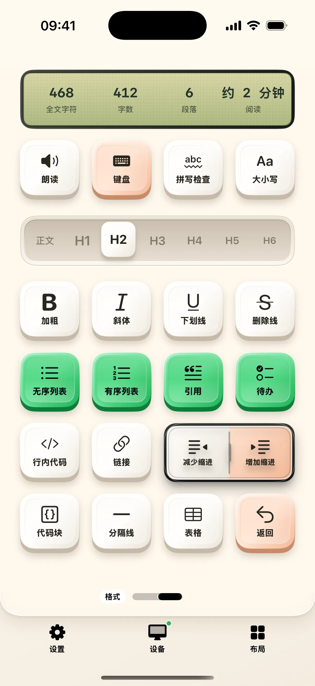

改稿时，重复动作往往比连续打字更多：选中一句、移动光标、调整标题、再回到上一处修改。奶猫妙控的写作布局把「文字」与「格式」分成两个桌面，用范围滑块和方向键处理选区，再用专门的格式控件整理文稿。
先确定这次操作的范围
文字页的滑块可选字、词、句、段。左右方向键按当前范围移动，双拼选择键向左或向右扩选；上下方向仍按编辑器的视觉行移动。引号键可以选取成对引号内的文字，开头和结尾用于文稿首尾。
查找和删除有明确的模式
点击查找填写关键词，方向键定位上一处或下一处；结束后可恢复普通移动。删除短按只处理已有选区，长按才进入按范围删除的模式。复制、粘贴、撤销与重做都有固定位置，适合在保留文稿视线时反复调整。

标题滑块与 Markdown 格式
格式页从正文到 H6 使用一条分段滑块，拖动预览、松手应用。列表、引用、待办、行内代码、代码块和表格用于整理 Markdown 原文；加粗、斜体、下划线与链接使用标准快捷键。文本编辑器与富文本软件对这些操作的解释可能不同。
选择与你的编辑器匹配的方式
标准 macOS 文本控件通过辅助功能处理全文与选区；Obsidian 可安装随附本地插件，通过其 Editor API 进行精确编辑。Chrome 只读网页的范围扩选目前不支持，阅读网页时应先在电脑手动选文。顶部统计按实际可读文稿或选区计算，不把整页网页导航算作正文。
开始使用
- 在 Mac 打开可编辑文稿，授予辅助功能权限。
- 选择「写作」，先测试字词范围与双向选择。
- 转到「格式」桌面设置标题，确认编辑器中的实际结果。
常见问题
Obsidian 需要额外设置吗？
精确编辑需要安装奶猫妙控随附的 Obsidian 本地插件。
所有格式都适合 Word 吗？
部分按钮发送通用快捷键，标题、列表等处理 Markdown 原文；应按目标编辑器选择功能或修改绑定。
本文对应 1.2.0。查看更新说明，或加入 iPhone / iPad TestFlight。